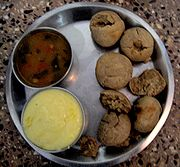
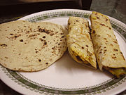
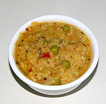

| Name | Image | Description |
|---|
| Bhatura | | a fluffy deep-fried leavened bread originating from the Indian subcontinent. |
| Baati |  | hard, unleavened bread cooked in most of areas of Rajasthan, and in some parts of Madhya Pradesh, and Gujarat states of India. |
| Biryani | | Mixed rice dish, optional spices, optional vegetables, meats or seafood. Can be served with plain yogurt. |
| Butter chicken |  | dish, originating in the Indian subcontinent, of chicken in a mildly spiced tomato sauce. It is also known as murgh mahal |
| Chaat | | Street food. Usually containing potato patty fried in oil, topped with sweet yogurt, and other sauces and spices |
| Chana Masala | | Chickpeas of the Chana type in tomato based sauce. |
| Chapati |  | unleavened flatbread originating from the Indian subcontinent and staple in India, Nepal, Bangladesh, Pakistan, Sri Lanka, East Africa and the Caribbean. |
| Chicken Tikka | | Chicken marinated in a Yogurt tomato sauce. It is known to have a creamy texture. |
| Chole Bhature | | Main course with Chick peas, assorted spices, wheat flour and bhatura yeast. |
| Poha |  | Specialty from Madhya Pradesh. Common snack in central part of India. Flattended rice, potato, turmeric. |
| Jalebi | | A North Indian twisted noodle like sweet dish dipped in sugary syrup |
| Gajar ka halwa | | sweet dish native to U.P. / Punjab. Carrot, Milk, Ghee, Cashew. |
| Kheer | | Rice cooked with milk and dry fruits |
| Naan |  | Tandoor-baked soft flatbread made with refined wheat flour. |
| Palak Paneer |  | Paneer cubes in spinach gravy |
| Pani Poori |  | a typical Indian tadka |
| Paratha |  | flatbread native to the Indian subcontinent, prevalent throughout the modern-day nations of India, Sri Lanka, Pakistan, Nepal, Bangladesh, Maldives, and Myanmar, where wheat is the traditional staple |
| Rajma |  | Main. Kidney beans & assorted spices. |
| Samosa |  | Normally served as an entree or appetiser. Potatoes, onions, peas, coriander, and lentils, may be served with a mint or tamarind sauce |
| Shahi Paneer |  | A popular Indian, as well as Punjabi and Nepalese dish, made with paneer in a thick cream and tomato gravy and spices |
| Tandoori chicken |  | Tandoori chicken as a dish originated in the Punjab before the independence of India and Pakistan. |
| Name | Image | Description |
|---|
| Dosa | | Pancake/Hopper. Ground rice, urad dal |
| Idli | | Steamed cake of fermented rice and pulse flour. Rice, urad dal |
| Indian Omelette | | Egg omelette or veg omelette |
| Kerala Beef Fry |  | Beef, onions, spices, coconut, curry leaves |
| Koottu |  | Vegetable, daal or lentil mixture boiled in water |
| Masala Dosa |  | Dosa with masala and potato. |
| papadum |  | Thin deep fried disk served as meal accompaniment |
| Sambhar |  | Lentil soup cooked with vegetables and a blend of south Indian spices (masala). Usually taken with rice, idli, dosa, pongal or upma. |
| Uttapam |  | Rice pancake/hopper with a topping of onions / tomatoes / coconut |
| Vada |  | Savory donut. Urad dal. |
| Name | Image | Description |
|---|
| Barfi | | Sweet |
| Chaat | | Snack |
| Chakri | | a Savoury snack. Mixed grain flour. |
| Chevda | | Mixture of Flattened rice, groundnut, chana, masala. |
| Dabeli |  | Snack made by mixing boiled potatoes with a special dabeli masala, putting the mixture in a ladi pav |
| Dahivada |  | Snack made by mixing boiled potatoes with a special dabeli masala, putting the mixture in a ladi pav |
| Dhokla | | Lentil snack. Gram. |
| Dumaloo |  | Main dish. Potatoes deep fry, yogurt, coriander powder, ginger powder. |
| Poha | | Snack. Flattened rice |
| Gulab jamun |  | sweet |
| Gur | | | Sweet unrefined brown sugar sold in blocks[3].
| Jalebi | | Sweet maida & grained semolina flour, baking powder, curd, sugar. |
| Laddu | | sweet |
| Modak | | Sweet coconut dumplings. Rice flour, coconut. |
| Pani Poori | | Snack |
| Pav Bhaji |  | Mixed curry of onion, capsicum, peas, cauliflower potatoes. |
| Sohan Papdi |  | Sweet |
| Upmaa |  | a dish originating from the Indian subcontinent, cooked as a thick porridge from dry-roasted semolina or coarse rice flour. |
| Vada pav |  | Burger. Gram flour, potatoes, chilli, garlic, ginger. |
| Name | Image | Description |
|---|
| Malpua | | Sweet Snacks. Specially in Odisha . |
| Momo |  | Originally from Tibet, it is a popular snack/ food item in India. |
| Black rice | | A special local variety of rice |
| Brown Rice | | A special local variety of rice |
| Chhenapoda | | Dessert. Cottage cheese, flour, sugar syrup. Oriya Specialty. |
| Daal | | Lentils. |
| Mishti Doi | | A dessert with curd, sugar syrup and /or jaggery. Bengali Sweet curd. |
| Bhaji | | Fried Vegetables. |
| Rasgulla | | A dessert with cottage cheese, flour and sugar syrup. Signature Bengali condiment, originating in Bengal with GI |
| Sabji |  | Different green or other vegetables. |